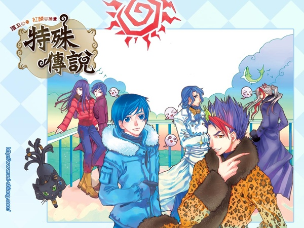
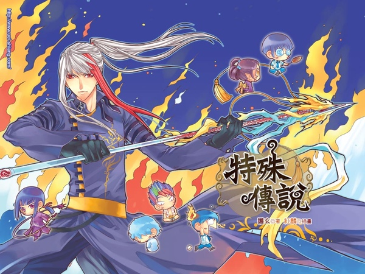
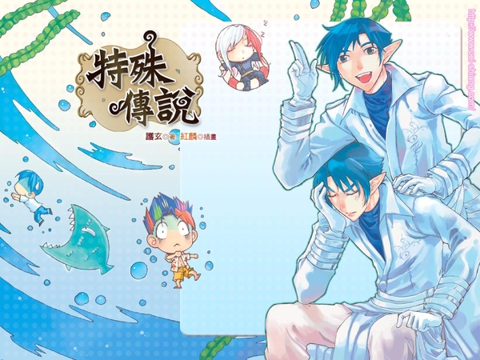

特殊傳說是台灣作家護玄所著的輕小說系列，由紅麟繪畫封面繪圖及內頁插圖，目前有三部
第一部:
通稱學院篇，描述從小到大霉運當頭的少年褚冥漾，莫名其妙進到位於守世界中異能學園的龍頭「Atlantis」學院，以了解自我、肯定自我的第一人稱敘述的奇幻故事。
第二部:
《亙古潛夜》篇:講述褚冥漾、西瑞‧羅耶伊亞、席雷‧阿斯利安、休狄‧辛德森和獨角獸式青，帶著陷入半睡半醒狀態的冰炎學長，護送他回族裡讓長輩們幫他平衡力量的旅途過程，並講述西瑞的四哥六羅的事,以及有關妖師一族失落的歷史事實和他們本來的責任。
《恆遠之晝》篇:內容講述回到學院後不久，褚冥漾得知護送冰炎的隊伍失蹤，便與藥師寺夏碎一同離開學院尋找冰炎等人。
第三部:
講述主角褚冥漾逐漸成為不在是躲在他人身後的人，連載中

褚冥漾: 本系列主角，黑髮黑眼，個性有些退縮，喜歡甜食，討厭咖啡
冰炎: 冰牙族精靈三王子亞那瑟恩與燄之谷狼王族第一公主之子，脾氣暴躁、眼神銳利、做事謹慎，有暴力傾向，喜歡直來直往，嘴上不饒人，有暴力傾向，喜歡直來直往，但實際上是個刀子口豆腐心的好人。
夏碎:藥師寺家少主及雪野家家主之長子,個性溫和淡泊，不喜歡過多的交談，實際上有點腹黑
米可蕥:褚冥漾進入學院的第一個好友，對褚冥漾有好感，喜歡冰炎，對點心烹飪等有相當大的愛好。
千冬歲:褚冥漾的好友，個性認真，有些自傲，學問豐富。
萊恩:褚冥漾的好友，十分重視家族名譽(包括朋友的家族)，束起頭髮後會變得十分積極、認真，而且存在感會提高。
西瑞:個性爽朗自我中心，說話經常夾雜鄉土電視劇及動畫中的經典名句，品味怪得他人難以接受，但雷多非常喜歡他的髮型。
安因:木之天使一族，負責管理教室，住在黑館四樓，經常教褚冥漾符咒，遇到關於鬼族的事容易暴走。
賽塔:古老的白精靈一族，通稱賽塔，淡金髮綠眼，外表年輕，但已活了非常久的時間，講話輕柔有禮，個性成熟穩重。

伊多:水妖精的寶物「先見之鏡」的守護者，個性溫柔體貼，獨排眾議堅持要照顧兩位被稱為「血的禁忌之子」的弟弟，因此自願留級一年方便照顧兩位弟弟，對兩位被族人唾棄的弟弟照顧有加，亦被弟弟視為最重要而要誓死保護的人。
雅多:因在屍體中出生，所以與雙胞胎弟弟雷多被族人稱為「血的禁忌之子」，面冷心善，對待朋友很好，關心兄長及弟弟，曾兩次對褚冥漾結下永不傷害的誓約。
雷多:雅多的雙胞胎弟弟，與雅多同為「血的禁忌之子」，視西瑞的頭為藝術，想盡辦法想要探聽其頭髮的秘密，但至今依然未能如願。
亞那:千年前鬼族大戰的英雄，冰牙精靈族三王子，有著銀色長髮與銀眼，冰炎之父，經常莫名其妙的從天上掉下來，然後被奇怪的人撿到。
凡斯:千年前的妖師，曾為妖師首領，白陵家的祖先，和亞那為朋友，也是撿到亞那的人之一。
安地爾:精通醫術，兵器為醫療用的長針，有銀色與黑色兩種，黑針帶毒，銀針則可以作攻擊和治療兩用，擅長煽動人心。